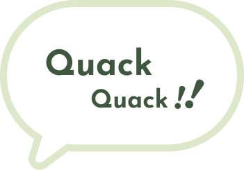
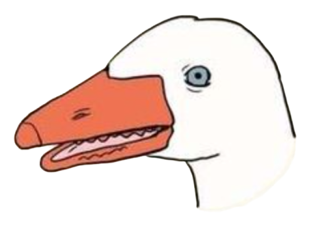
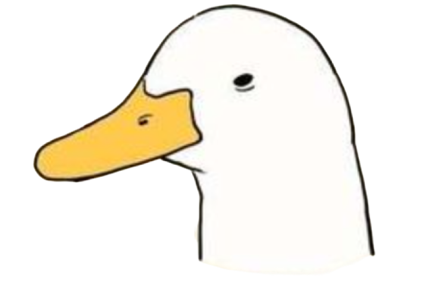

Check
My information
( click button! )



duck VS goose
사람들은 오리를 보고 거위라고 착각하거나, 거위를 보고 오리라고 생각하는 경우가 많아요.
알고 보면 차이점이 정말 명확한데요. 이제부터 오리와 거위를 구별하는 방법을 알려드릴게요!
| 거위 | 오리 | |
|---|---|---|
|  |  | |
| 공통점 |
|
|
| 부리 | 납작하고 노란색 | 납작하고 주황색 |
| 몸집 | 길고 얇다 | 짧고 굵다 |
| 다리 | 굵다 | 가늘다 |
| 날개 | 크다 (비행능력이 뛰어나 먼 거리 이동이 가능) |
작고 덜 발달했다 (거위보다 짧은 거리만 이동 가능) |
| 수명 | 약 40~50년 | 약 10~15년 |
| 성격 | 사나우며 공격적이고 경계심이 투철 | 온순하고 겁이 많음 |